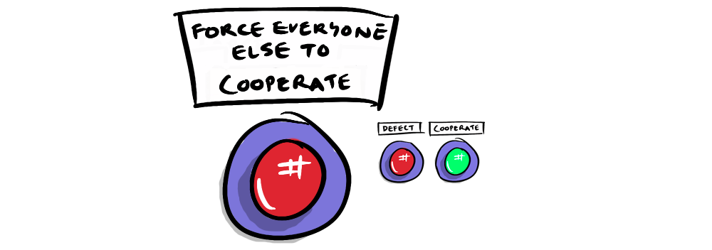
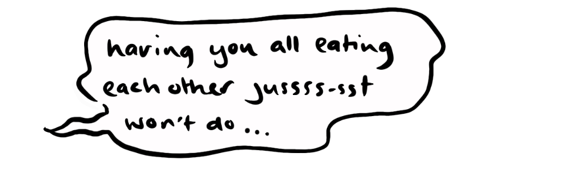
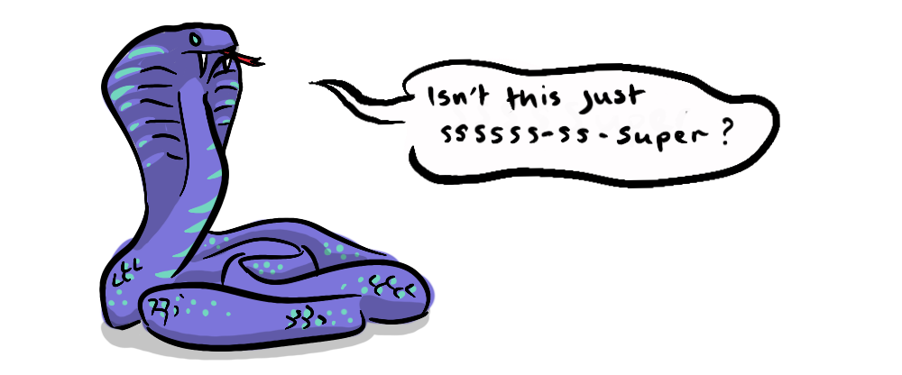

That we should cooperate might seem self-evident to us modern cooperators, living in democratic societies, paying taxes and generally participating in a society. But it can't have seemed so obvious, nor have been so widespread, amongst our distant forebears. Game theory provides us with thought experiments to help understand how cooperation might have been rationally chosen under certain conditions. But it seems presumptuous to think that the broad adoption of enlightened reason played a major role in our early moral development. Accident of evolution stands as a potential alternative, but provides no more a convincing story.

Human history consists in large part of stories of rulers and their exploits. It would seem a good aim to reconcile these stories of extreme self-interested gains and losses, with the appearance of widespread cooperation.
A modification to The Prisoner's Dilemma will provide us with a framework. The original prisoner's dilemma gave two options to participating agents:

While both agents cooperating provides the greatest overall payoff, the dominant strategy, the Nash equilibrium, identifies always defect as most reasonable, primarily as a means of hedging against other defectors, assumedly in a dog-eat-dog world. So, not a great help to our ends.

Our history of absolute rulers with the power of life and death over their subjects, however, points to a third option as likely having played a role:
Whoever holds the title of super-defector (through whatever means this is established) will not need to concern themselves with the thoughts and actions of equally positioned others, being in a position to instead force whatever behaviour they like upon these others, from an entirely unequal position.

In a prisoner's dilemma played by hundreds or thousands of agents, the payoff for total cooperation will be substantial. The cost of one or two super-defecting free-riders making no productive contribution, as well as their cost of enforcing cooperation, will lessen the overall payoff from this ideal. But even so, the situation provides a substantial improvement over an uncoordinated dog-eat-dog alternative.
In this way a ruler with absolute power, acting out of a sense of self-interest, will rationally choose to enforce cooperation in their subjects. This will have the twofold effect of:

- Increasing the total productivity of the group
- Further enriching the ruler, enabling them to e.g. build grander palaces and self-congratulatory statues, and to fund stronger armies.
This might seem an unstable situation upheld only by continual force, with the implication that our morals, in the basic sense of widespread cooperation, would be subject to change the moment this force is removed. This problem will be the subject of the second part in this short series, so stay tuned.